Wake, Okayama: things to do, food and stays
Wake · Okayama
Wake
Highlighted on the Okayama map.
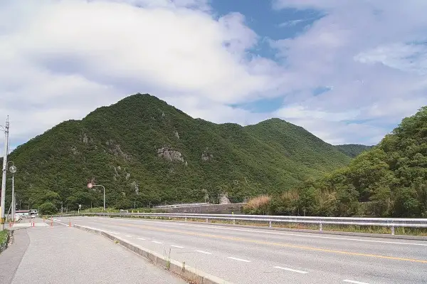
Stay
和気鵜飼谷温泉
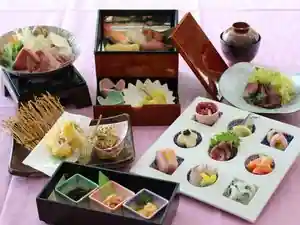
Waki Ukai Tani Onsen
Inn at Wakiukaitani Onsen in Masuhara, Wake.
藤野民宿
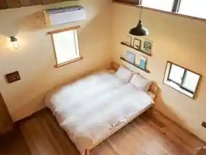
Fujino Minshuku
Dining
ピザキング
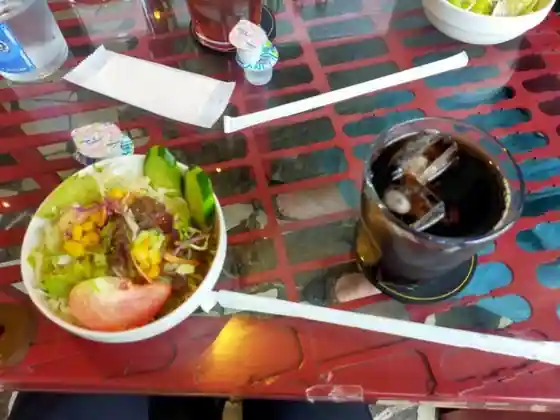
Pizza Kingu
ステーキハウス 樹 和気本店
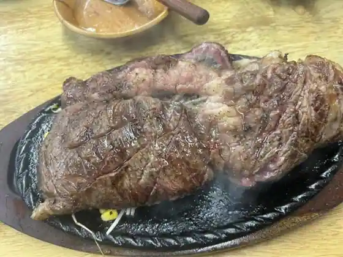
Steak House Ki Waki Hon
蕎麦 栂
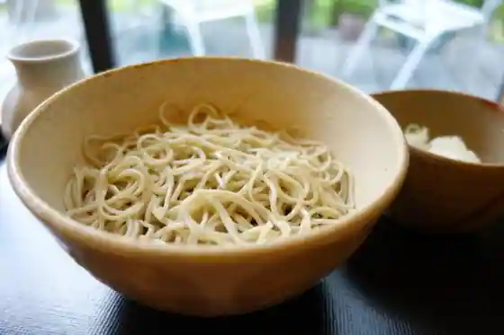
Soba Tsuga
とんこう
Tonko
中華そばてんしん
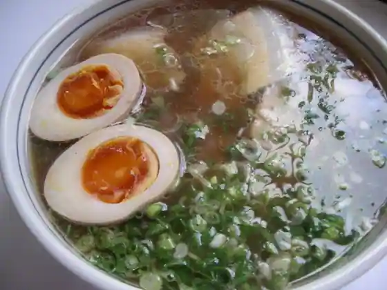
Chuka Sobatenshin
古民家cafe kiara
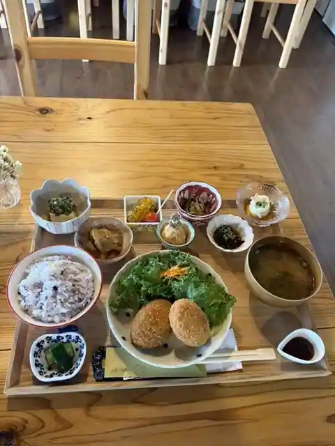
Ko Minka cafe kiara
一休
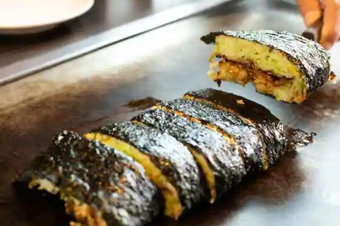
Ikkyu
BSベーカリー
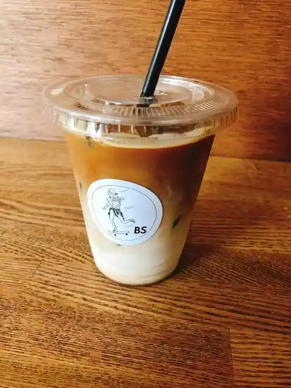
BS Bakery
オムライスの店/和蔵
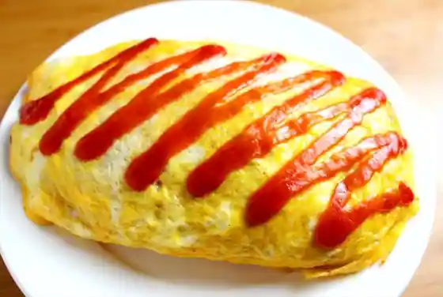
Omuraisu No Mise / Wazo
大森
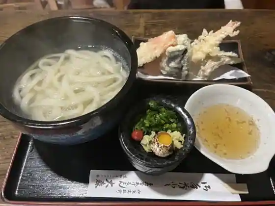
Omori
カフェ グーテ
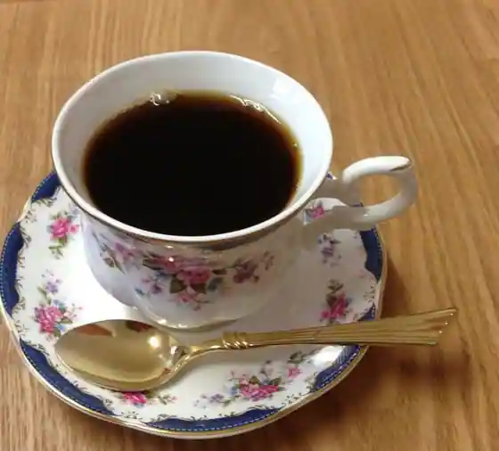
Cafe Gute
おうちCafe球根
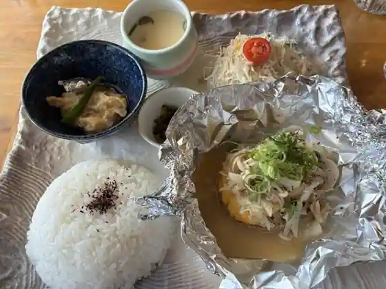
Ochi Cafe Kyukon
串カツkitchenグランマ
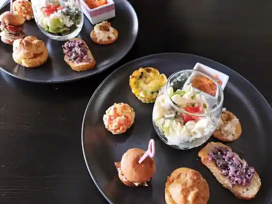
Kushi Katsu kitchen Guranma
こっくんおかんの店
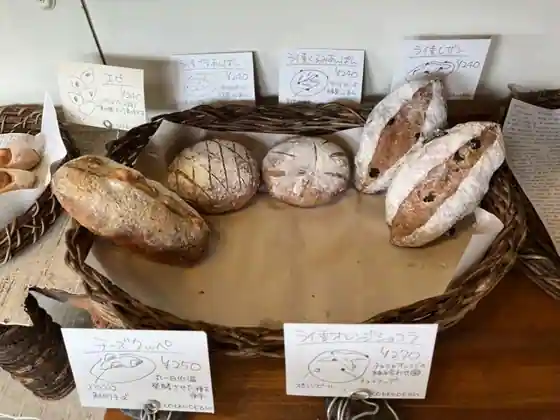
Kokkun'Okanno
割烹 新まつや
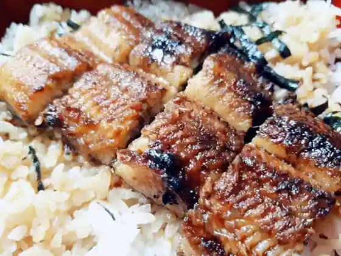
Kappo Shin Matsuya
わらべ
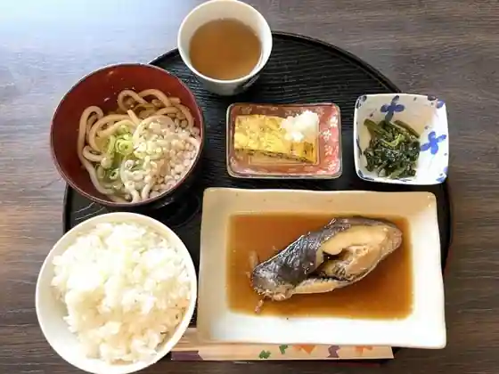
Warabe
豊かわ 本店
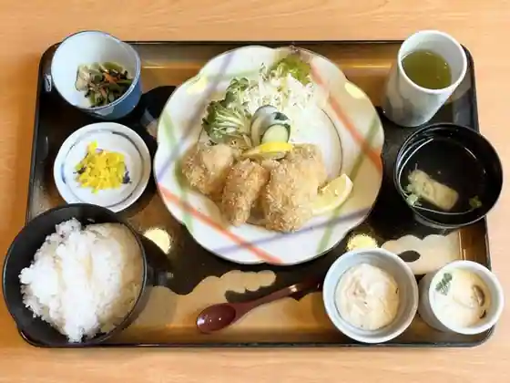
Yutaka Wa Hon
caf'e de bouquet
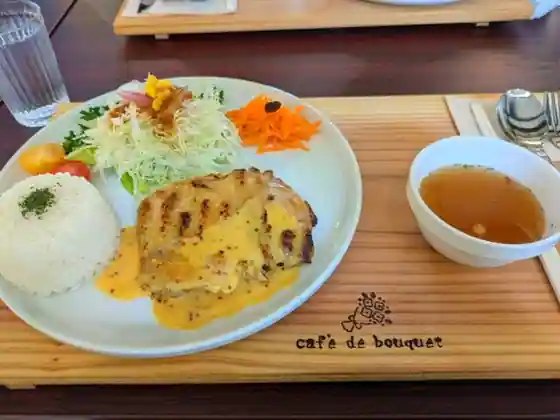
caf'e de bouquet
BBJ
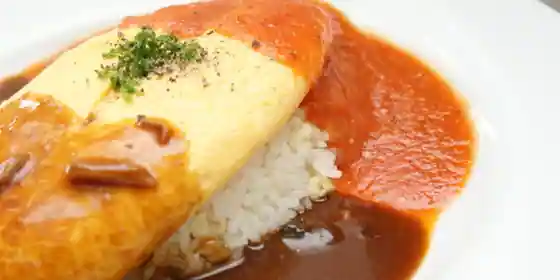
BBJ
エンターワケ キッチン
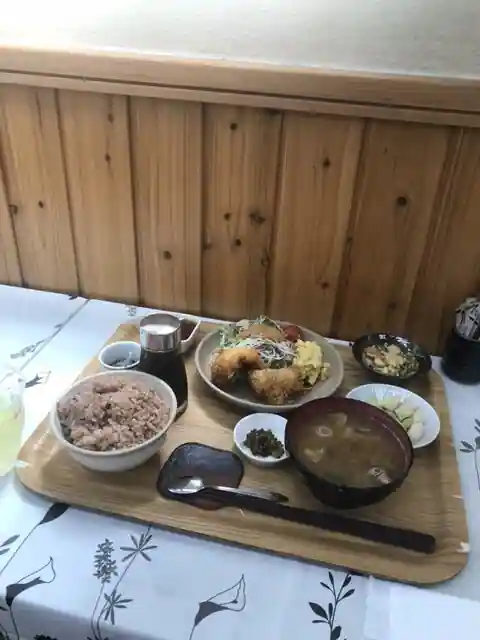
Entawake Kitchen
がんこ亭 和気店
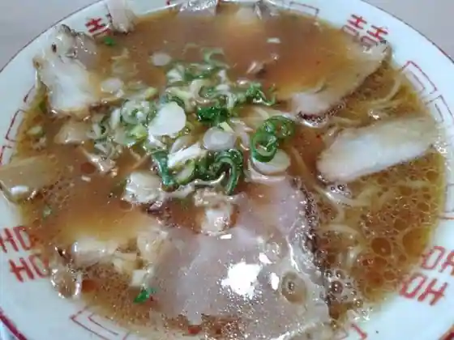
Ganko Tei Waki
台湾料理 昌盛龍
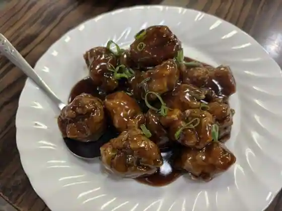
Taiwan Ryori Masa Jo Ryu
カフェ＆アートスペース風舎
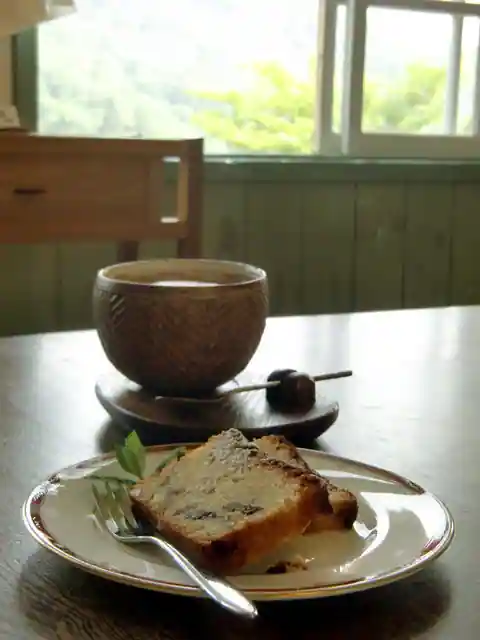
Cafe & Atosupesu Kaze Sha
Sights
Okayama Wake Yakuruto Kojo
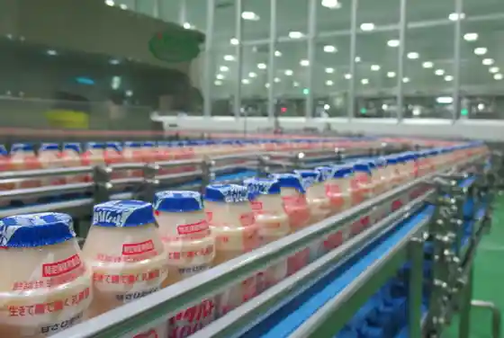
Fuji Park
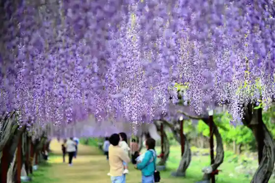
Kanko Ringo Sono
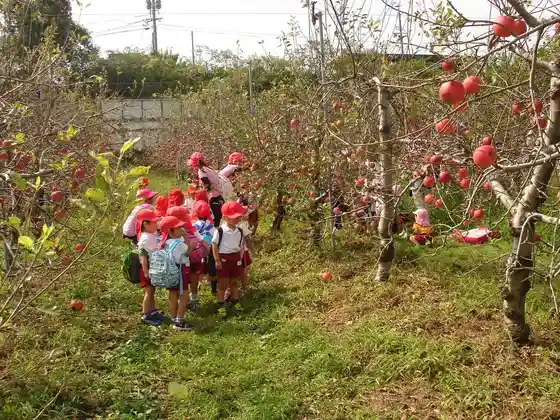
Waki Shrine (Wake Shrine)
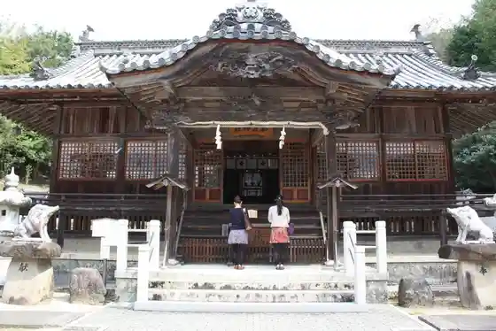
Wakemaro Park (Kyu : Wake Ukai Tani Kotsu Park)
Wake Rentasaikuru (Wake Ekimae)
Wake Domu
Okayamaken Shizenhogo Center
Wake Utsukushii Mori
JA Hare no Kunioka Yama Hyaku Na Market Wake Mise
Anyoji (Wake)
Wake Gym
Entawake (Wake Tourism Association)
Kyu Taikoku Ie House
Tado no Tanada
Wake Arupusu
Yuka Shrine
Tenjin Yama Castle Ruins
Wake Kiyomaro Zo
Choraku Falls
Hikasa Bara Sono
Ho Arashi Sono (Wake Shrine Gaien)
Moto On Tera
Wake Tahara Iseki Museum
Sanyo Supotsu Land Nakayama Sakitto
Motokyu Tera
Hon Sei Tera
Wake Folk History Museum
Wake Furu Sato Hall